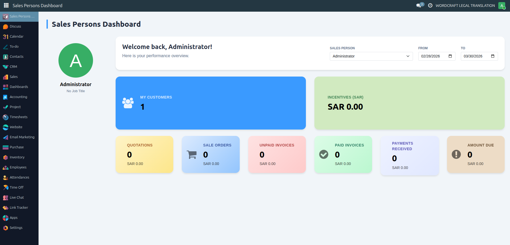

The Sales Persons Dashboard module provides a centralized view of sales performance for each salesperson. It allows users to monitor key metrics such as customers, quotations, sale orders, invoices, and payments in a clean and easy-to-understand interface.
The dashboard includes date filters and salesperson selection to analyze performance within a specific time range. It helps sales teams quickly understand their progress and financial status without navigating through multiple menus.
Key highlights of the dashboard include:
